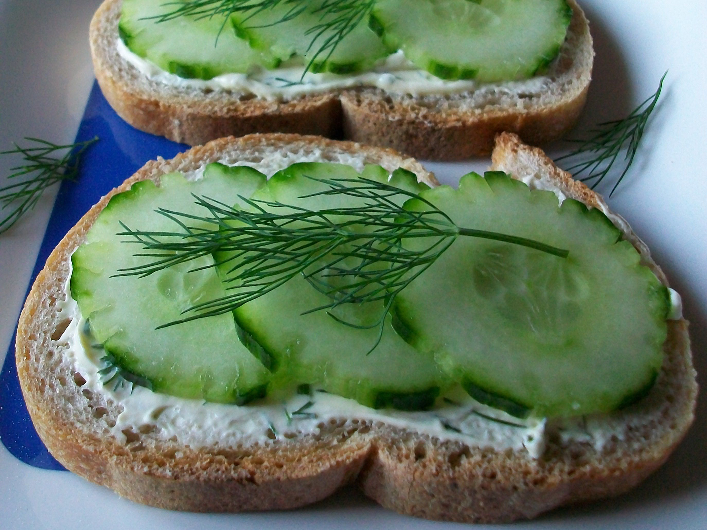

Cucumber Sandwiches

Description
A delicious low calorie meal that is quick and easy to make. It is a healthy
snack that can add to your nutritional goals.
Ingredients
- 1 (8 ounce) package cream cheese, softened
- ½ cup mayonnaise
- 1 (.7 ounce) package dry Italian salad dressing mix
- 2 loaves French bread, cut into 1 inch slices
- 2 medium cucumbers, sliced
- 1 pinch dried dill weed
Steps
- In a medium bowl, mix together the cream cheese, mayonnaise and Italian dressing mix. Refrigerate for at least 6 hours, or preferably overnight.
- Spread the cream cheese blend onto slices of French bread. Top with a cucumber slice, and sprinkle with dill. You can make as many or few as you like. the cream cheese mixture keeps for about a week in the refrigerator so you can make them over and over again!
Nutrition
123 calories; protein 3.6g; carbohydrates 15.6g; fat 5.2g; cholesterol 8.2mg; sodium 296.6mg.